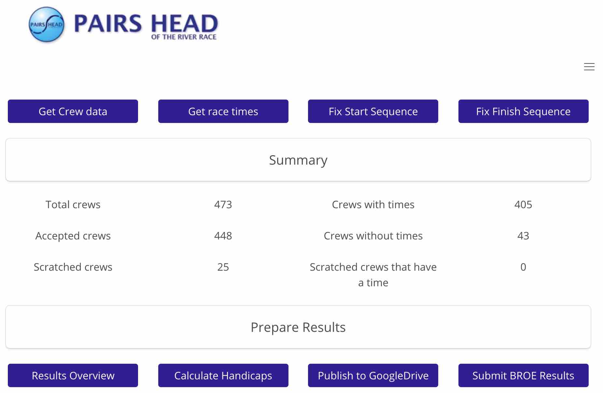
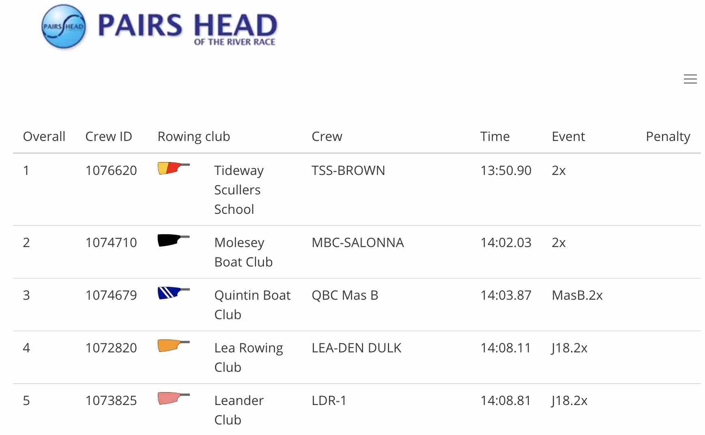
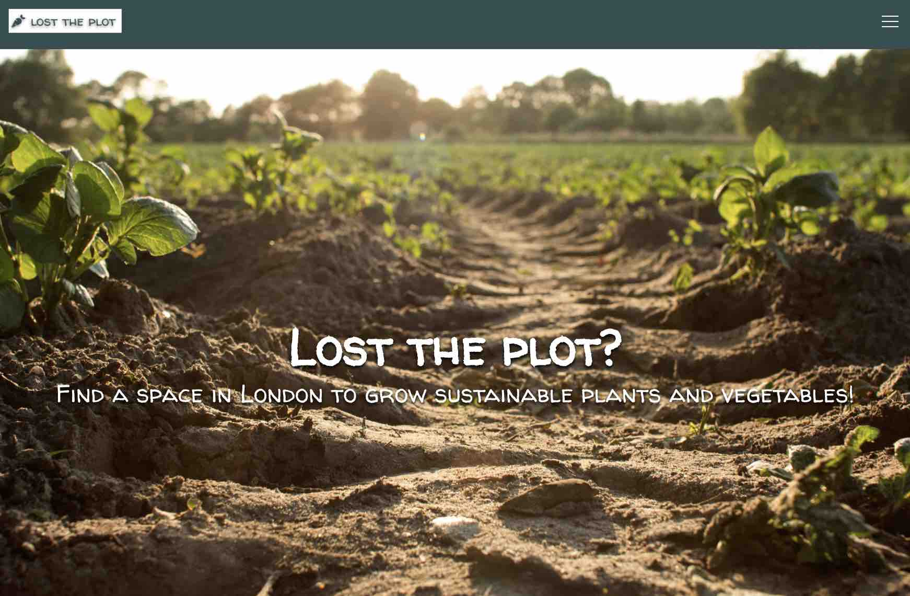
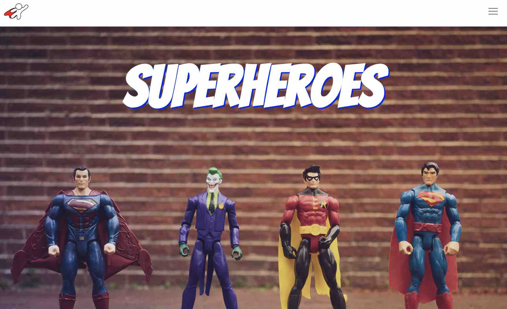
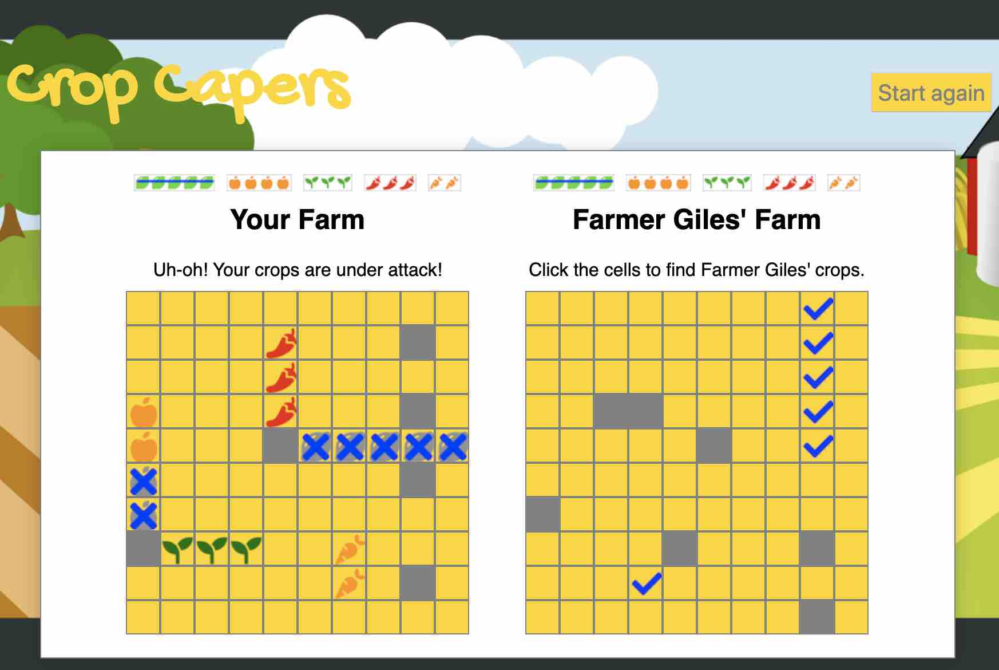

Sian Alcock
Software Engineer, London
Profile
Relatively new to development following a career change - I have 3.5 years experience building great-looking, fully functional websites supported by Wordpress for a leading digital agency in the non-profit sector.
An enthusiastic, committed finisher with an open-minded approach to technology and platforms, I really enjoy learning new skills and delivering reliable, bug-free, readable and testable code.
Technical skills
Front end
JavaScript
React
HTML5
Symfony/Twig Templates
CSS3
SCSS
Tailwind
Axios
Webpack
Bulma
Storybook
Other
Git
GitHub
Yarn
NPM
Heroku
Backend
Wordpress
PHP
Express
Node.js
MongoDB
Mongoose
Python
Django
PostgreSQL
SQLite
Mocha
Chai
SuperTest
Development projects
As part of the General Assembly Software Engineering Immersive course, I undertook four development projects. Now that the course is over, I have chosen to continue my fourth and final project as a side project. Note: The project is not yet deployed.
Pairs Head Results - extended side project
My side project is a continuation of my fourth General Assembly Project. This is a real-world application that will hopefully be used to generate results for the Pairs Head Rowing Race in October 2019 and thereafter.
Pairs Head Results
I built this fullstack application over 7 days. It uses Django/Python/SQLite (or PostgreSQL on deployed site) on the backend and React/JavaScript front end. It's purpose is to automate the preparation of results for the Pairs Head of the River Rowing Race which is held in October every year.
Lost the plot
For our third project at General Assembly, we were placed into groups of four and charged with building a fullstack application using Express/MongoDB backend and React/JavaScript frontend. The website aims to give users a means of finding green spaces / allotments / community gardens in London in which they can grow food.
Super-heroes - 48 hour hackathon
This project was described as a hackathon. We were put into pairs and given 48 hours to build a website using React/JavaScript. The website had to consume a public API. We chose Superheroes as our theme and found an API that listed 720 Superheroes.
Crop Capers
I built this fun, grid-based game on my own using JavaScript over 7 days. The game is called Crop Capers and was based on BattleShips. Instead of seeking out and destroying battleships, the player must seek out and dig up crops.
Experience
January 2022 to Current
TPXImpact - Frontend Engineer
Joined Manifesto Ltd - now part of TPXImpact as a frontend/Wordpress engineer. Built first class, beautiful, fully functional, greenfield websites for leading UK charities.
Key responsibilities:
- Development and maintenance of modules according to design within agreed timescales using Wordpress as the CMS and using HTML, CSS and Javascript to build out the front end
- Deployment of coding updates to staging and production sites on WPEngine hosting provider
- Participation in reviews of designs for website components and estimation of development/testing time using agile principles and practices
- Participation in client meetings, including planning, daily standups and sprint demos
- Collaboration with other developers, including agreeing technical approaches/solutions and conducting peer code review
- Documentation of key website functionality and processes
Major achievements / outstanding projects:
Breast Cancer Now/Wear It Pink microsite.
My contribution: Build of frontend components using CSHTML - razor syntax, typescript and storybook with tailwind css.
Key challenges:
- Learn unfamiliar tech rapidly
- Make complex design work seamlessly eg using hand-drawn images with curved modules
Islamic Relief UK website.

My contribution: Wordpress backend and the majority of components.
Key challenges:
- Complex functional requirements eg prayer timetables based on sunrise/sunset times
- Api to import price of silver daily for use in calculations
Five Wordpress sites for Guy's & St Thomas.
Key challenges:
- Reuse code to keep costs down whilst making sites look unique; Use of Wordpress multisite and parent/child theme capabilities
- Customization of backend to keep only controls relevant to site being edited
June to October 2019
General Assembly - Software Engineering Immersive
This challenging and intensive 12 week bootcamp covers fundamental programming and computer science knowledge, as well as experience with languages, frameworks, and libraries.
August 2018 to April 2019
Round the world travel
After shrinking the Citicus business, my partner and I embarked on this global adventure, touring ten countries. The photographs on this site were all taken by us on that trip. Check out our blog here (not developed by me...)
December 2000 to June 2018
Director, Co-founder Citicus Limited
I co-founded and directed a software company to develop and sell world-class security, risk and compliance management software, plus supporting services.
Key responsibilities:
- Devising and implementing overall corporate strategy and direction including for Sales & Marketing, IT and Software development.
- Establishing and maintaining relationships with customers.
- Detailed design and specification of software capabilities and oversight of development capabilities.
- Documentation of all aspects of the software, including tutorials and FAQs.
- Development and Management of software quality assurance processes and resources.
- Design and delivery of software training courses.
- Recruitment and day-to-day management of a team of 8 to 10 permanent staff plus temporary contractors.
Major achievements:
- Development and delivery of award-winning risk management software - sold world-wide and implemented by major companies like Kraft Foods, Unilever, Santos and more.
- Successful development and implementation of estimation planning and tracking tool that helped Citicus to routinely deliver high-quality software updates to precise timescales.
- Management of IT Help desk which was rated extremely highly by all customers.